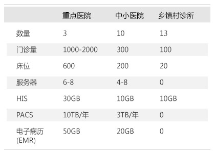
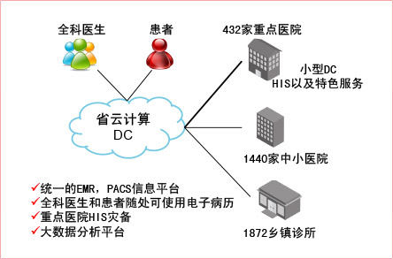
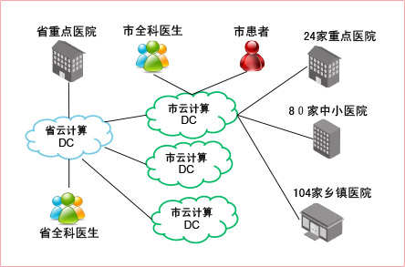
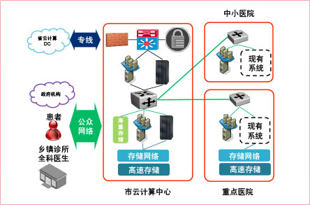
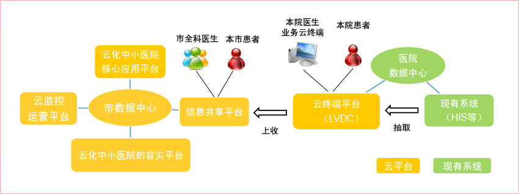
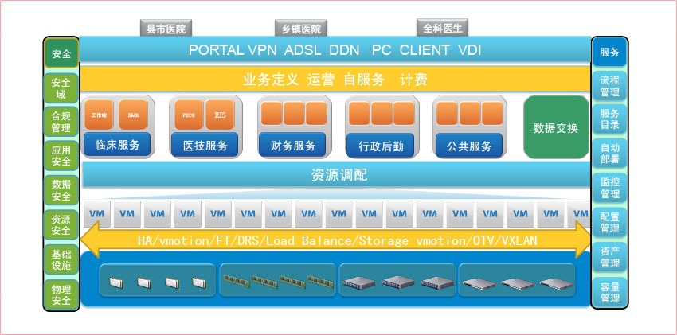
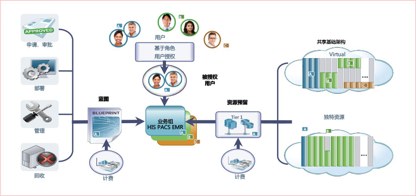
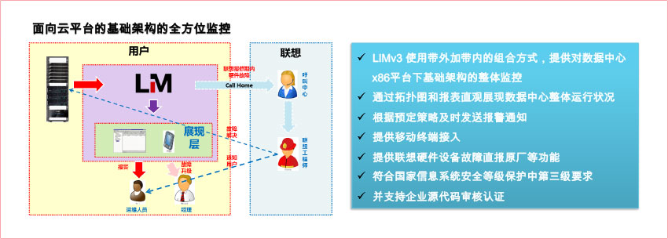
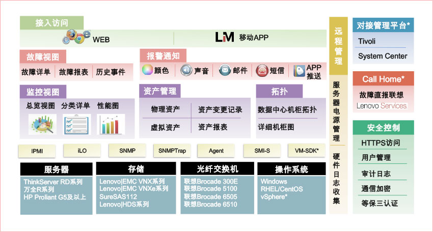
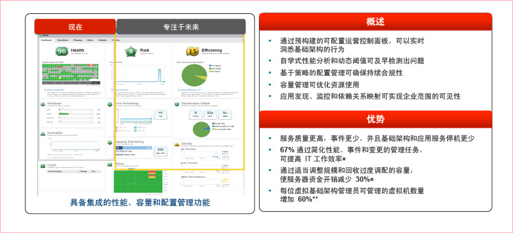

- 
-
基层医疗业务信息
一般来讲：
- 平均每个省有18个市，每个市有8个县，每个县有3家重点医院，10家中小医院，13家乡镇村诊所
- 所有基层医疗卫生机构急需要基于云的业务平台
- 重点医院已经有相当规模的数据中心
- 60%中小医院有小型数据中心，部分中小医院为自建小型HIS，缺乏统一标准管理
- 乡镇村诊所IT设施薄弱，缺乏先进的基层医疗云基础架构方案
思路1：省级大集中平台
- 
-
- 全科医生、患者和各个医院通过移动互联网等方式，在全市可随处使用EMR，PACS等服务
- 重点仅需要小型DC来运行自己的HIS以及其他特色服务所有中小医院和乡镇诊所均使用云计算中心提供的HIS，PACS，EMR服务
- 省级云计算中心为重点医院的HIS系统提供灾难备份服务，提升重点医院可靠性
- 省云计算中心提供大数据平台，提供流行病预测，电子档案分析等服务，供大型疾病防治等公共信息服务
思路2：省市多级云平台
- 
-
- 分期逐步完善各市级云平台的，最终建立完整市平台
- 全科医生、患者和各个医院通过移动互联网等方式，在全市可随处使用EMR，PACS等服务
- 重点医院仅需要专门DC来运行自己的HIS以及其他特色服务
- 大部分中小医院和所有乡镇诊所均使用云计算中心提供的HIS，PACS，EMR服务
- 县级云计算中心为重点医院的HIS系统提供灾难备份服务，提升重点医院可靠性
- 部分中小医院的特色业务使用自己的DC，逐步使用县云计算平台资源
市级云平台的基础架构整体框架思路
- 
-
- 重点医院和中小医院的网络作为县中心的延展，实现二层的联通，同时进行有效隔离，可以提供虚拟机和灾备的灵活切换
- 全科医生、患者和乡镇诊所通过工作网络连接县云计算中心
- 县中心的通过专线与上级市中心进行连接
- 重点医院需要将SAN与县云就按中心联通，同时考虑应用双活和灾备
- 部分中小医院的特色业务使用自己的DC，关键业务与县云计算中心通过专线连接
市级各数据中心主要业务平台系统关系

市级云计算中心基础架构的实现思路

市云计算平台的自助服务和运营支撑平台

市云计算中心的统一监控平台的特点

市云计算中心的体系架构

市云计算中心的体系架构
